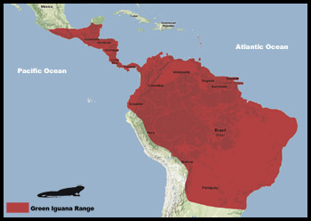

Wild green iguanas can be found in southern Mexico, Central America and most parts of South America. Feral populations can be found in parts of California, Florida and Hawaii. These populations consist of individuals that either escaped from captivity or were released by their owners and managed to survive and breed in their new habitat. Although some people assume that the introduction of such non-native species may be beneficial for the environment, they are in fact quite harmfull. They disrupt the ecosystem, compete with native species for resources and prey on species that are not adapted to deal with such predators. Populations of feral iguanas in Florida cause much damage each year. Iguana owners must take responsibility and prevent them from entering the wild in areas which they are not native to. Here is a map of the Green Iguana range:
How do Green Iguanas live?
Green iguanas are generally arboreal, meaning that they live in trees. Their long claws are superb adaptations for this lifestyle. Although they may appear to be quite clumsy as they tip over your furniture, knock things off shelves and fall off of perches, they are quite good climbers. They spend the majority of the day high in the forest canopy, and venture to the ground only to move from tree to tree, to mate, and to lay eggs. They are also good swimmers and jumpers.